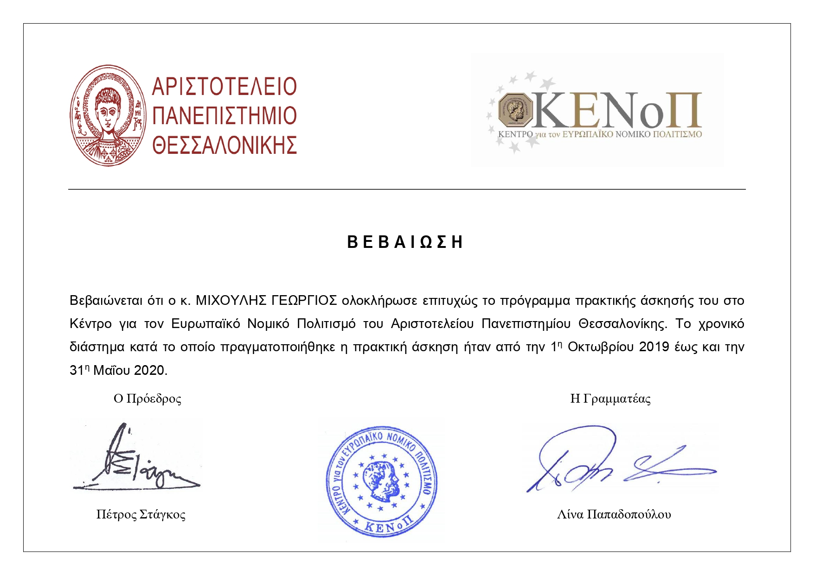
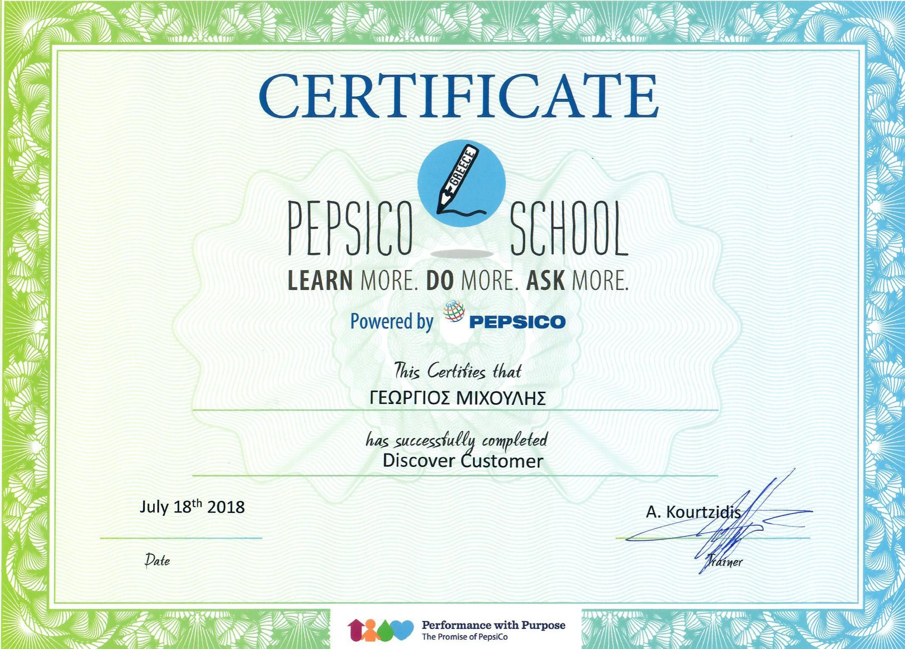
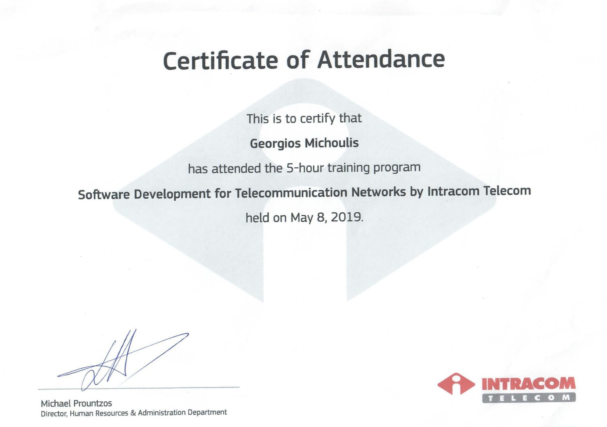
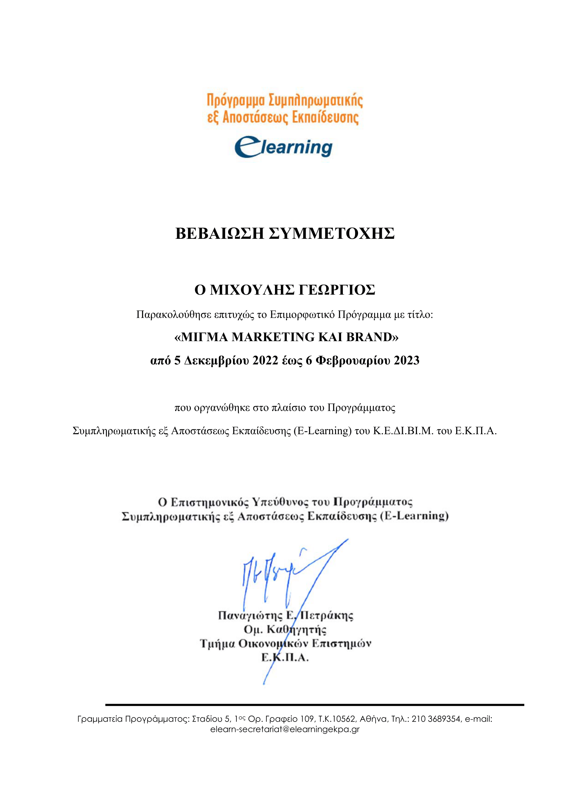
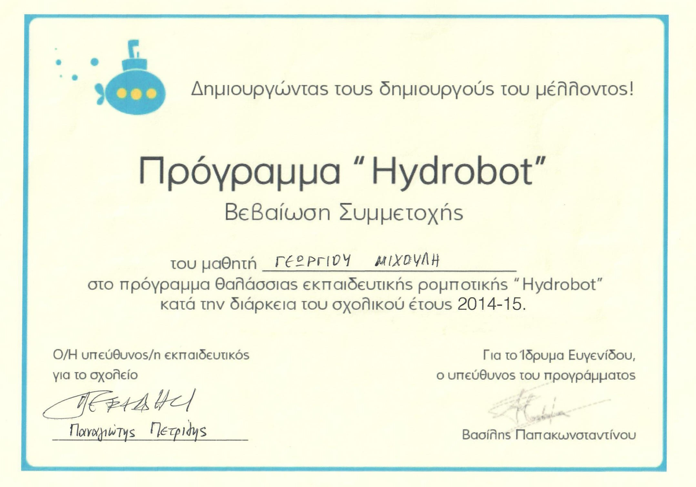
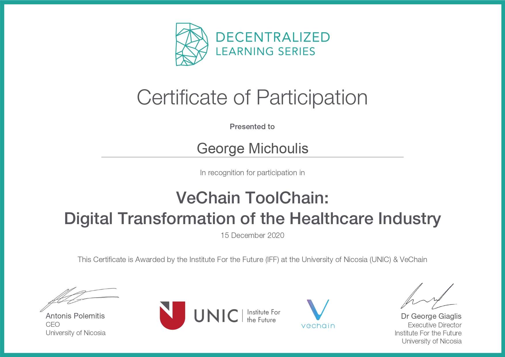
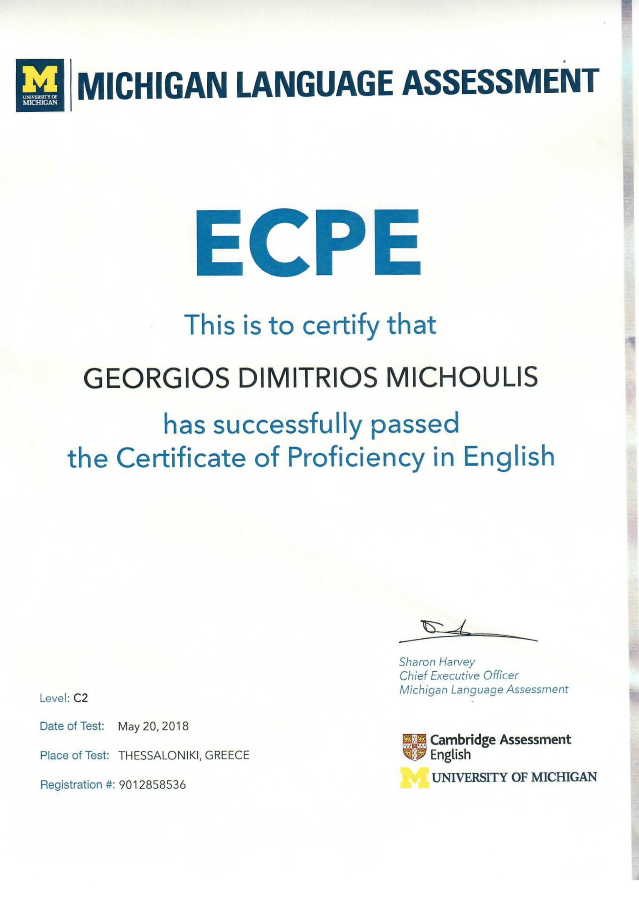

Blockchain developer and researcher · Thessaloniki, Greece
George Michoulis
I work on smart contracts, graph-based machine learning and full-stack Web3 systems, and I teach networks and security.
Golden hour on Nea Paralia
About
I'm based in Thessaloniki and I work remotely. I build and study blockchain systems.
My BSc in Applied Informatics at the University of Macedonia ended with a thesis on verifying academic credentials on Ethereum. My MSc in Data and Web Science at Aristotle University of Thessaloniki, funded by a DeepMind scholarship, used graph embeddings to predict drug-target interactions.
- Research
- Papers and startup work on how effective ledgers are, and what they change in practice.
- Build
- Web3 products (NFTs, DeFi) and data science with graph embeddings, shipped in Solidity, TypeScript and the cloud.
- Teach
- Lectures on networks, security and application development, and public talks on Web3 and edge tech.
MSc Data and Web Science, Aristotle University of Thessaloniki, 2020–2022 · BSc Applied Informatics, University of Macedonia, 2015–2020
Sunset at the White Tower
Experience
05/2026 – now
Web3 Full-Stack Developer Cyberscope by TAC
End-to-end Web3 products: contracts, on-chain integrations, React and Next.js frontends, security tooling.
2024 – 2026
Blockchain Developer & Researcher Sidroco Holdings Ltd
An NFT marketplace for 5G, Hyperledger Fabric prototypes, an Erasmus+ LMS and multinational EU projects.
2023 – 2025
Lecturer & Academic Partner University of Derby / Mediterranean College
Networks and security, web scripting and application development, with inclusivity-first assessment.
2022 – 2024
Blockchain & Full-Stack Developer University of Nicosia / IFF
Large Next.js, NestJS and Docker applications, and a Web3 NFT marketplace.
Blue hour over the city
Papers
- 32 citations
A process-aware approach for blockchain-based verification of academic qualifications
Simulation Modelling Practice and Theory 121, 102642 · 2022
- 11 citations
Verification of academic qualifications through Ethereum blockchain: an introduction to VerDe
XIV Balkan Conference on Operational Research · 2020
- 7 citations
Exploring decentralized governance: a framework applied to Compound Finance
Intl. Conf. on Mathematical Research for Blockchain Economy · 2023
- 1 citation
FraMark: a blockchain marketplace for 5G network management using fractional NFTs
7th World Symposium on Communication Engineering (WSCE) · 2024
- 1 citation
Data security for smart cities
2025
- 0 citations
Unlocking 5G network slicing: a survey on blockchain marketplaces utilizing NFTs, AI, and advanced resource management
IEEE ICCE · 2025
- 0 citations
Graph embedding and node features for drug-target interaction prediction
Aristotle University of Thessaloniki, MSc work · 2022
- 0 citations
Blockchain in higher education: permissioned and permissionless approaches
4th Summit on Gender Equality in Computing · 2022
Plus two Greek-language theses on verifying academic titles with Ethereum (2020, 2021). All of it on Google Scholar.
The lights come on
Projects and certificates
Sites I built

verde.uom.grVerDe, the credential verification system from my papers. Shown: its contact page. 
bbf-gui.ddns.netBlockchain Benchmarking Framework: deploy and evaluate blockchain protocols. 
metau.unic.ac.cyUniversity of Nicosia course site: decentralised, on-chain and in the metaverse. 
accelerate.unic.ac.cySign-in screen for the University of Nicosia's Accelerate platform. 
celc.web.auth.grGreek-language site of the Centre for European Legal Culture. 
eudem.polsci.auth.grSite of the EUDEM Jean Monnet Chair. 
marlab.ode.uom.grMarketing Laboratory (MarLab), University of Macedonia.
Recognition
- 2020–2022DeepMind Scholarship, Aristotle University of Thessaloniki
- 06/20223rd place, Infinitech Hackathon (Crowdpolicy)
- 2020–2021Basic Research grant, University of Macedonia
- 2025Move/Sui Bootcamp Thessaloniki award
Certificates


See all 34 certificates
 Academic achievement
Academic achievement TOEIC listening and reading
TOEIC listening and reading
European legal culture program- Cybersecurity eLearning academy
- Digital skills for tourism

Discover customer Entrepreneurship and new enterprises
Entrepreneurship and new enterprises Design and build a website
Design and build a website NFT Talents program
NFT Talents program Networking essentials
Networking essentials
Software for telecom networks The Hour of Code
The Hour of Code Blockchain for the legal industry
Blockchain for the legal industry Blockchain in education
Blockchain in education Healthcare cybersecurity analytics
Healthcare cybersecurity analytics EY Cyber Day
EY Cyber Day GNU/Linux command line
GNU/Linux command line RippleX workshop
RippleX workshop
Migma marketing and brand
Hydrobot marine robotics Processing data in the fog
Processing data in the fog SKGcode real estate chatbot
SKGcode real estate chatbot
VeChain ToolChain in healthcare
English proficiency


Night on the Thermaic Gulf
Contact
Write to me about Web3 work, research or teaching.
gmixoulis@gmail.comAlso on this site: Zen Garden, my personal notes, and Ledger Run, my CV as a platformer.